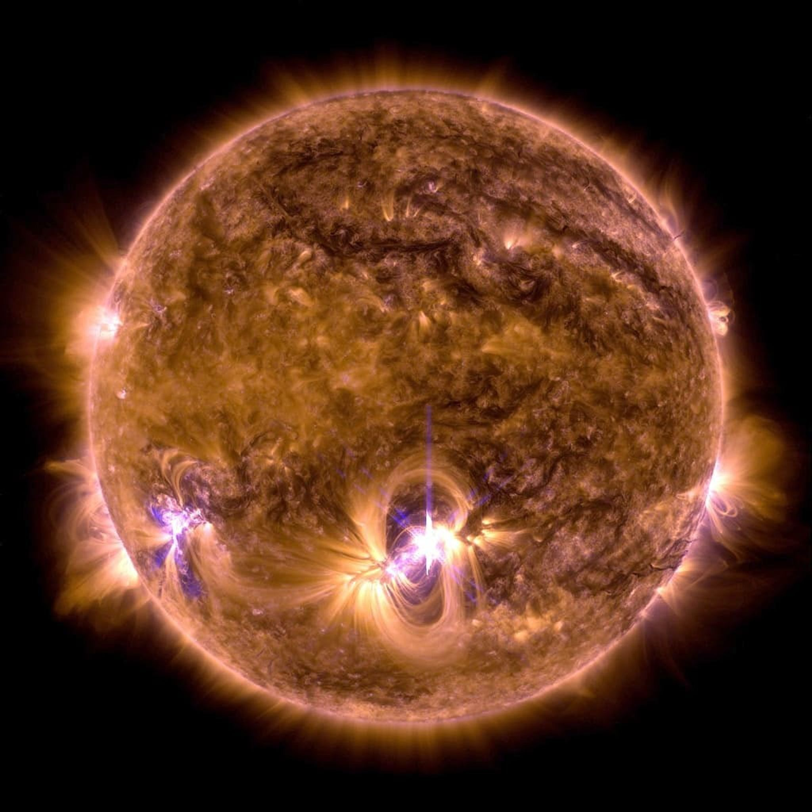
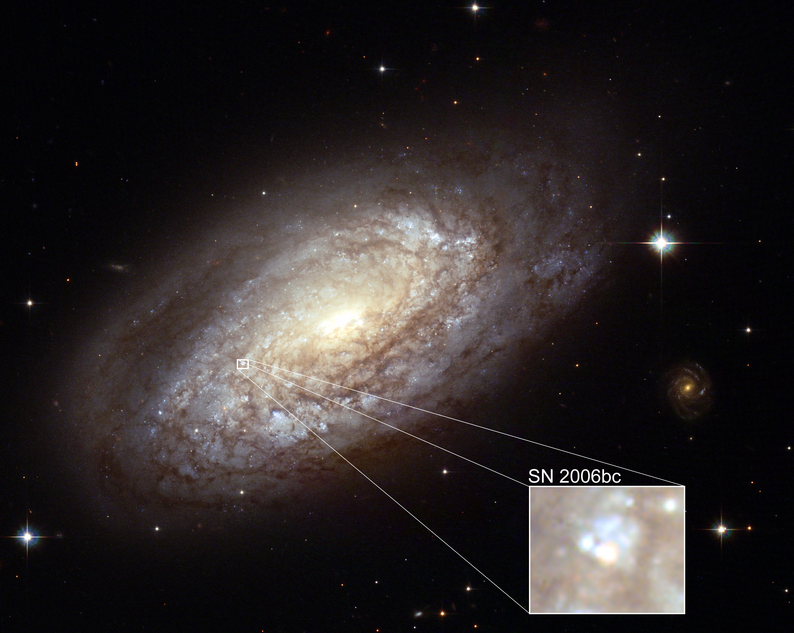

A Comprehensive Exploration of Stellar Evolution:
From Formation in Stellar Nurseries to the Diverse End States of Stars
Introduction
The life cycle of a star is one of the most awe-inspiring and complex processes in the universe. From the moment a star is born in a dense, swirling molecular cloud to its eventual death as a white dwarf, neutron star, or black hole, the journey of a star spans millions to billions of years. Throughout this journey, stars undergo profound transformations that influence their environment and leave lasting impacts on the universe. This article explores the processes involved in stellar evolution, from their formation in stellar nurseries to their eventual demise, including nuclear fusion, supernova explosions, and the different end states of stars.

The edge of a nearby, young, star-forming region NGC 3324 in the Carina Nebula. Captured in infrared light by the Near-Infrared Camera (NIRCam) on NASA's James Webb Space Telescope, this image reveals previously obscured areas of star birth. (NASA, ESA, CSA, STScI)
The Birth of a Star: Stellar Nurseries
The journey of a star begins in a stellar nursery, also known as a molecular cloud or nebula. These massive, cold regions of space are filled with dust and gas, primarily composed of hydrogen and helium, and can span thousands of light years across. Although they are diffuse, certain areas within these clouds are dense enough for gravity to cause the material to collapse inward, setting the stage for star formation. The process of star birth typically begins when a disturbance—such as the shockwave from a nearby supernova or the passage of another star—causes a region of the cloud to become unstable. This disturbance triggers a gravitational collapse, where the cloud’s gas and dust begin to condense, creating dense knots of material. As the collapse continues, the central core heats up due to increasing pressure, forming a protostar—a dense, hot object at the center of the collapsing region. Although a protostar is not yet a full-fledged star, it marks the early stage of stellar formation. As the protostar grows, it continues to accrete gas and dust from the surrounding molecular cloud, and its temperature and pressure increase dramatically. Eventually, the core of the protostar becomes hot enough—reaching millions of degrees Celsius—for nuclear fusion to begin. When this occurs, the protostar transitions into a true star, as nuclear fusion provides the energy needed to sustain the star's pressure, counteracting the force of gravity and preventing further collapse. Despite this, the early life of a star is turbulent. During this phase, the protostar often experiences stellar winds, powerful outflows of gas that blow away excess material and clear out surrounding regions. These winds play an essential role in shaping the star's environment, preventing the star from growing too massive and possibly halting further accretion. Additionally, the intense radiation and energy output from the young star help to ionize the surrounding gas, creating a glowing nebula known as an H II region. Through this process, a star is gradually born out of the dense material of a molecular cloud, beginning a long and dynamic journey that will last millions to billions of years.
Nuclear Fusion: The Powerhouse of a Star
At the heart of a star, nuclear fusion is the driving force behind its energy production. This process involves atomic nuclei colliding and fusing to form heavier elements, releasing an immense amount of energy in the form of light and heat. For most stars, the primary fusion process is the conversion of hydrogen into helium, a reaction that occurs in the core under extreme temperatures and pressures. In smaller stars like our Sun, the fusion process is known as the proton-proton chain. This begins when two hydrogen nuclei (protons) collide, forming deuterium (a hydrogen isotope). As this deuterium nucleus combines with another proton, it forms helium-3. When two helium-3 nuclei collide, they produce helium-4 and release two protons back into the system. Throughout these steps, vast amounts of energy are released, which is radiated as light and heat, providing the outward pressure necessary to balance the inward force of gravity. In more massive stars, the process is more complex and is known as the CNO cycle. In this cycle, carbon, nitrogen, and oxygen act as catalysts that help fuse hydrogen into helium. Unlike the proton-proton chain, the CNO cycle relies on the presence of these heavier elements to facilitate the fusion process. Due to the higher core temperatures in massive stars, fusion occurs at a much faster rate, resulting in significantly higher luminosity. However, this accelerated fusion rate also leads to a much shorter lifespan for massive stars compared to smaller ones. The energy produced by fusion is vital in maintaining the balance of forces within a star. It provides the necessary pressure to counteract the immense gravitational pull that would otherwise cause the star to collapse. As fusion continues, it fuels the star's life cycle, sustaining it for millions to billions of years depending on its size.
NASA’s Solar Dynamics Observatory captured this image of a solar flare showing a blend of 171 Angstrom and 131 Angstrom light, subsets of extreme ultraviolet light that highlight the plasma loops in the corona, tinted yellow, and the extremely hot material in flares, tinted blue, respectively.
The Main Sequence Phase: A Star's Stable Period
The majority of a star's life is spent in the "main sequence" phase, which is characterized by a state of equilibrium. During this time, the energy generated by nuclear fusion in the core counteracts the inward pull of gravity, maintaining the star's stability. This phase is the longest in a star's life, lasting anywhere from a few million years for massive stars to tens of billions of years for stars like our Sun. At this stage, the star is a well-defined sphere of gas and plasma, with the core maintaining extremely high temperatures, typically around 10 million degrees Celsius. These temperatures are sufficient to sustain hydrogen fusion, where hydrogen atoms combine to form helium, releasing vast amounts of energy in the form of light and heat. This energy is radiated outward, creating the brightness we observe from Earth. The pressure from this energy prevents the star from collapsing under its own gravity, allowing it to maintain a stable size and luminosity. During the main sequence phase, the star’s size and brightness remain relatively constant, although the hydrogen fuel in the core is gradually depleted. As this occurs, the core slowly contracts and heats up, while the outer layers of the star expand slightly. For stars like the Sun, this phase lasts about 10 billion years, during which hydrogen is steadily converted into helium. When the core's hydrogen supply begins to diminish, the star will transition to the next stage of its evolution, setting the stage for its eventual transformation into a red giant or other end states depending on its mass.

A red giant after a star runs out of hydrogen fuel for nuclear fusion and has begun the process of dying
The Red Giant Phase: A Star Swells and Expands
The red giant phase is a critical and dramatic stage in the life cycle of a star, occurring when a star begins to run out of hydrogen fuel in its core. As the hydrogen supply dwindles, the core becomes unable to maintain the balance between the inward pull of gravity and the outward pressure from nuclear fusion. This disruption triggers a series of changes that result in the star expanding into a massive, cooler, and redder giant. As the hydrogen in the core is depleted, the core contracts under its own gravity, causing an increase in temperature and pressure. Meanwhile, the outer layers of the star, no longer supported by the fusion energy from the core, begin to expand and cool. This expansion causes the star to grow to enormous sizes, often swelling to hundreds of times its original radius. For stars like our Sun, this expansion could push the outer layers as far as the orbit of Venus or even beyond. While the outer layers cool and redden, the core becomes hot enough to initiate the fusion of helium into heavier elements such as carbon and oxygen. However, this helium fusion requires far higher temperatures and pressures than hydrogen fusion, typically exceeding 100 million degrees Celsius. As the core contracts further, the temperature rises, and the star becomes increasingly unstable. The fusion of helium and the generation of heavier elements in the core cause the star to pulse and fluctuate in size, leading to multiple cycles of expansion and contraction. In stars significantly more massive than the Sun, the fusion process becomes even more complex. After the helium fusion in the core, the star will continue to fuse progressively heavier elements like carbon and oxygen, and sometimes even silicon. This chain of fusion processes results in the creation of increasingly complex elements within the core. However, each stage of fusion requires increasingly higher temperatures and pressures, creating an ever-more unstable environment. As these new fusion reactions take place, the outer layers of the star are pushed further outward, and the star's outer atmosphere becomes progressively more extended. The instability of the star during this phase can lead to the shedding of its outer layers in powerful solar winds. These winds expel vast amounts of material into space, creating a dense shell of gas and dust that forms a planetary nebula. This nebula can be illuminated by the remaining energy from the core, producing beautiful, glowing structures visible to astronomers. At the end of the red giant phase, the star will have lost a significant portion of its mass through these solar winds, leaving behind the dense core. The core, now mostly composed of heavier elements like carbon and oxygen, will eventually either become a white dwarf (for stars of lower mass) or, in the case of more massive stars, continue to evolve toward a supernova. The red giant phase is essential in the creation of the elements that will later be incorporated into new stars, planets, and other celestial objects, continuing the cycle of stellar evolution. In summary, the red giant phase represents a tumultuous and unstable period in the life of a star. It is marked by significant expansion, intense fusion of heavier elements, and the eventual shedding of the star's outer layers. These processes set the stage for the star's final transformation, whether into a white dwarf, a supernova, or another end state depending on the star's mass.
Supernova: The Death of a Massive Star
A supernova is the dramatic and explosive end to a massive star's life cycle, marking one of the most energetic and awe-inspiring events in the universe. This cataclysmic explosion occurs when the core of a star, having fused increasingly heavier elements, can no longer sustain the gravitational pressure acting upon it. The collapse of the core triggers a violent release of energy, expelling the outer layers of the star into space. As a star progresses through its red giant phase, it builds up an iron core. Unlike lighter elements such as hydrogen and helium, iron cannot undergo further fusion reactions that release energy. This inability to generate energy through fusion leads to an inevitable collapse. Once the core's mass exceeds a critical limit (around 1.4 times the mass of the Sun), the core succumbs to gravity, rapidly collapsing in on itself. This collapse happens incredibly fast, in a matter of seconds. The iron core's density increases so much that electrons are forced to combine with protons, forming neutrons and releasing neutrinos in the process. The core becomes a densely packed neutron star, while the outer layers of the star are blown outward in a shockwave, which is the supernova explosion itself. The shockwave accelerates outward at velocities of up to 10,000 kilometers per second, causing the outer layers to be expelled into space with incredible force. The energy released during a supernova is immense, outshining the entire galaxy in which the star resides for a brief period. This energy not only destroys the star but also spreads heavier elements—such as iron, nickel, and even gold—into space. These elements are crucial for the formation of planets, life, and other stellar bodies in the universe. The explosion may also leave behind a neutron star or, in the case of the most massive stars, a black hole, depending on the mass of the star's core after the collapse. Supernovae also produce powerful shock waves that can trigger the formation of new stars in nearby gas clouds, continuing the cycle of stellar evolution. The remnants of a supernova, known as a supernova remnant, often contain complex structures like nebulae formed by the expanding gas and dust. These remnants also serve as laboratories for astronomers, offering insights into the conditions and processes that occur during the violent death of a star. In summary, a supernova represents the catastrophic end of a massive star's life, one that not only marks the death of the star but also plays an essential role in shaping the universe, enriching the interstellar medium with heavy elements, and influencing the formation of new stars and planetary systems.
The latest image from the NASA/ESA Hubble Space Telescope reveals a sharp view of the spiral galaxy NGC 2397. This image also shows a rare Hubble view of the late stages of a supernova - SN 2006bc, discovered in March 2006.
The Fate of a Star: White Dwarfs, Neutron Stars, and Black Holes
After a star exhausts its nuclear fuel and undergoes a catastrophic end-of-life event, its ultimate fate depends largely on its mass. There are three main outcomes: the creation of white dwarfs, neutron stars, or black holes. Each outcome is tied to the balance between the star's gravity and the forces that resist further collapse, and each remnant has a unique set of properties. Let's delve into the details of these fascinating stellar remnants.
White Dwarfs: The Remains of Low-Mass Stars
For stars with a mass less than about eight times that of the Sun, their evolution takes a relatively gentle, though still dramatic, turn after they exhaust their nuclear fuel. Instead of undergoing a supernova explosion, these stars shed their outer layers, creating a planetary nebula, while the core left behind becomes a white dwarf.
Formation and Structure of White Dwarfs:
A white dwarf is the final stage in the life of low- to medium-mass stars. When such a star's core no longer has sufficient fuel for nuclear fusion, it collapses under its own gravity. However, it does not collapse indefinitely because of a quantum mechanical effect called electron degeneracy pressure. This pressure arises because electrons, which are fermions, obey the Pauli Exclusion Principle—meaning no two electrons can occupy the same quantum state at the same time. As a result, as the core contracts, the electrons are forced into higher energy states, providing the outward pressure that counteracts gravity.
White dwarfs are extremely dense objects, with the mass of the Sun compressed into a volume about the size of Earth. This results in an incredibly high density, with a single cubic centimeter of a white dwarf weighing several tons. Despite this, white dwarfs are very small in size—typically around 1.4 times the mass of the Sun but no larger than Earth in diameter.
Composition and Cooling:
White dwarfs are composed primarily of carbon and oxygen, remnants of the nuclear fusion processes that occurred during the star's earlier phases. Some more massive white dwarfs may contain heavier elements like neon or magnesium. Because white dwarfs no longer undergo fusion, they slowly radiate away their residual heat over time. Initially, a white dwarf shines brightly, but as it loses its heat, its luminosity diminishes.
The cooling process of a white dwarf is slow, taking billions of years to fade to near absolute zero. As they cool, they become fainter and eventually invisible, becoming what is referred to as a black dwarf. However, this cooling process is so prolonged that no white dwarf is expected to have reached this stage yet, as the universe itself is only about 13.8 billion years old.
Despite their cooling, white dwarfs do not collapse into singularities because the electron degeneracy pressure remains a stabilizing force as long as the mass is below the Chandrasekhar limit (about 1.4 times the mass of the Sun). If the mass exceeds this limit, the white dwarf will undergo further collapse, leading to more exotic outcomes like a neutron star or black hole.
Neutron Stars: The Remains of Massive Stars
For stars with initial masses between about 8 and 20-30 times that of the Sun, the core left behind after the supernova explosion can collapse into a neutron star. Neutron stars are incredibly dense and exotic objects, composed primarily of neutrons—the subatomic particles that are normally found in atomic nuclei.
Formation and Structure of Neutron Stars:
When the core of a massive star collapses after a supernova explosion, the pressure and temperature become so extreme that protons and electrons combine to form neutrons, through a process known as inverse beta decay. This reaction generates a star composed mostly of neutrons, packed so tightly that a neutron star has a density far higher than that of a white dwarf. Neutron stars typically have masses ranging from about 1.4 to 2 times the mass of the Sun, but their diameters are only around 10 to 20 kilometers, making them incredibly compact.
Neutron stars are supported by neutron degeneracy pressure, a similar quantum mechanical effect to electron degeneracy pressure but much stronger. Since neutrons, like electrons, are fermions, they are also subject to the Pauli Exclusion Principle. This pressure prevents the star from collapsing further into a black hole unless its mass exceeds a certain threshold (roughly 3 solar masses).
Extraordinary Properties and Pulsars:
Neutron stars possess several remarkable characteristics. For example, they can rotate incredibly quickly, completing several rotations per second to thousands of rotations per minute. This rapid rotation, combined with strong magnetic fields, can cause neutron stars to emit beams of radiation from their magnetic poles. If these beams happen to sweep across the Earth, they are detected as pulsars—highly regular pulses of radio, X-ray, or gamma radiation.
Neutron stars are also incredibly hot, with surface temperatures exceeding 1 million Kelvin immediately after their formation. However, they cool over time, though much more slowly than white dwarfs. Due to their intense gravitational fields, neutron stars also exhibit significant warping of space-time around them. If the star is in a binary system, its gravity can pull matter from a companion star, creating a disk of accreting material that can heat up to extreme temperatures, producing X-rays detectable from Earth.
The Neutron Star Limit:
If a neutron star's mass exceeds approximately 2 to 3 solar masses, the degeneracy pressure provided by neutrons can no longer support the star, leading to its collapse into a black hole. This mass threshold is called the Tolman–Oppenheimer–Volkoff limit, named after the scientists who predicted it. The outcome of this collapse is a singularity, a point of infinite density, surrounded by an event horizon where gravity is so strong that not even light can escape.

This diagram of a pulsar shows the neutron star with a strong magnetic field (field lines shown in blue) and a beam of light along the magnetic axis. As the neutron star spins, the magnetic field spins with it, sweeping that beam through space. If that beam sweeps over Earth, we see it as a regular pulse of light. (Credit: NASA/Goddard Space Flight Center Conceptual Image Lab)
Black Holes: The Ultimate Cosmic Grave For the most massive stars, the end of their life cycle is more dramatic and mysterious. When a star’s core exceeds a certain mass after a supernova, it will collapse into a black hole—an object with gravitational pull so strong that not even light can escape from it. The formation of a black hole is a complex process that involves both the collapse of the star’s core and the stretching of space-time itself.Formation and Structure of Black Holes: A black hole forms when the core of a star collapses under its own gravity beyond a critical point, resulting in a singularity—a region of space with infinite density. The collapsing core becomes smaller and smaller as the gravitational forces intensify, and once it crosses the Schwarzschild radius (the event horizon), nothing, not even light, can escape from the black hole. The event horizon marks the boundary of the black hole, beyond which all paths lead inward, regardless of the direction of travel. The core itself becomes a singularity, a point in space where the curvature of space-time becomes infinite, and the laws of physics as we currently understand them break down. Black holes are therefore regions of extreme gravity, where space-time itself is so warped that traditional concepts of space and time cease to apply.
Properties of Black Holes: Although we cannot observe a black hole directly due to the absence of light, we can infer their presence through their effects on nearby objects. For example, if a star is orbiting a region where a black hole is located, the gravitational pull of the black hole can cause the star to move in peculiar orbits. In some cases, material from a companion star may be pulled into the black hole, forming an accretion disk that heats up and emits X-rays, making the black hole detectable from Earth. One of the most fascinating features of black holes is their effect on space-time. According to Einstein’s theory of general relativity, black holes warp the fabric of space-time in such a way that time appears to slow down as one approaches the event horizon. Near the event horizon, gravitational time dilation becomes extreme, meaning that time passes much more slowly for an observer near the black hole compared to one far away.
Growth and Accretion of Black Holes: Black holes can grow by accreting mass from their surroundings. If a black hole is in a binary system, it may siphon material from a companion star, forming a disk of hot gas and dust that spirals inward. This material heats up to extreme temperatures as it accelerates, emitting radiation in the X-ray spectrum. In this way, black holes can grow over time, potentially reaching millions or even billions of times the mass of the Sun. Additionally, black holes can merge with other black holes, leading to the release of enormous amounts of energy in the form of gravitational waves, ripples in space-time that were first detected in 2015 by the LIGO observatory.
Conclusion:
The journey of a star, from its birth in a stellar nursery to its eventual death as a white dwarf, neutron star, or black hole, is a testament to the dynamic and ever-changing nature of the universe. The processes of stellar evolution, including nuclear fusion, supernova explosions, and the creation of new elements, play a crucial role in shaping the cosmos. Stars are not only the sources of light and heat but also the engines that drive the formation of new stars, planets, and life itself. As stars die, they leave behind their remains, which become the building blocks for new generations of stars and planets. The cycle of stellar birth and death is one of the fundamental forces driving the evolution of the universe, ensuring that the cosmic story continues, generation after generation.
References:
1. Clayton, D. D. (2003). Handbook of Isotopes in the Cosmos: From Hydrogen to Gallium. Cambridge University Press.
2. Chomiuk, L., & Povich, M. S. (2011). "The Evolution of Star-forming Regions." Annual Review of Astronomy and Astrophysics, 49, 344-385.
3. Schwab, J., & Koretke, L. (2020). "Stellar Death: Understanding Supernovae and Stellar Remnants." Nature Astronomy, 4(4), 407-416.
4. Cox, A. N. (2000). Allen's Astrophysical Quantities (4th ed.). Springer-Verlag.
5.Lattimer, J. M., & Prakash, M. (2007). "Neutron Star Observations: Probes of Matter under Extreme Conditions." Physics Reports, 442(4), 109-165.